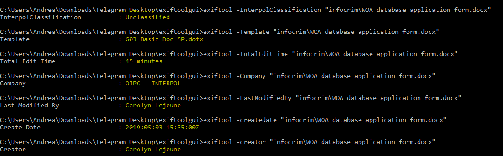
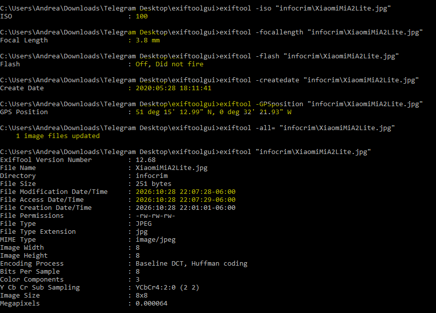

La fotografía como testigo: extracción de metadatos GPS para geolocalización
Introducción
En la era digital actual, los archivos electrónicos y las fotografías digitales almacenan una gran cantidad de información oculta conocida como metadatos. Estos datos invisibles para el usuario común documentan detalles técnicos esenciales, tales como la autoría, fechas de creación, configuraciones de dispositivos e, incluso, coordenadas geográficas exactas de GPS. Dentro del ámbito de la seguridad informática y la investigación forense digital, el análisis de metadatos mediante herramientas especializadas como ExifTool permite a los analistas extraer rastros digitales vitales para verificar la autenticidad de los documentos, rastrear la procedencia de la información y reconstruir escenarios geolocalizados de forma precisa.
Objetivo
Analizar y extraer los metadatos de diferentes tipos de archivos digitales (documentos ofimáticos e imágenes) utilizando ExifTool, con el propósito de identificar información sensible, datos de autoría, configuraciones de captura técnica y coordenadas geográficas para su posterior geolocalización y tratamiento forense.
Análisis de metadatos del documento institucional
A través de la ejecución de comandos en ExifTool, se inspeccionaron las propiedades internas del documento para obtener datos sobre su origen y trazabilidad:
- Clasificación de Interpol: Se identificó bajo la categoría de "Unclassified".
- Plantilla base: Fue elaborado utilizando la plantilla "G03 Basic Doc SP.dotx".
- Tiempos y Autoría: El archivo registró un tiempo total de edición de 45 minutos.
- Propiedad: La propiedad pertenece a la compañía OIPC – INTERPOL.
- Creación y Modificación: La creación y última modificación del fichero fueron realizadas por Carolyn Lejeune
- Fecha: 2019:05:03 15:35:00Z.

Análisis forense y geolocalización de la imagen
Mediante la extracción de los parámetros EXIF e información GPS de la fotografía digital, se obtuvieron los siguientes hallazgos técnicos:
- Parámetros de captura: Se utilizó una apertura ISO de 100, una longitud focal de 3.8 mm, sin la utilización de disparo de flash ("Off, Did not fire"), con fecha de creación del archivo fijada el 2020:05:28 18:11:41.
- Geolocalización: La extracción de la posición GPS indicó las coordenadas exactas de 51° 15' 12.99" N, 0° 32' 21.93" W, situando el punto de captura geográficamente en Inglaterra (Reino Unido).
- Privacidad y Sanitización: Finalmente, se ejecutó el proceso de limpieza y eliminación total de metadatos del archivo multimedia utilizando el comando de purga de ExifTool (-all=), comprobando la anulación exitosa de los rastros sensibles para proteger la privacidad de la muestra.

Conclusión
El desarrollo de esta práctica demostró la enorme relevancia que tienen los metadatos en la informática forense y la ciberseguridad. Herramientas como ExifTool facilitan la extracción minuciosa de información que a simple vista permanece oculta, permitiendo comprobar la trazabilidad de documentos institucionales y la ubicación geográfica exacta de archivos multimedia a través de sus coordenadas GPS. Asimismo, se comprobó la necesidad fundamental de aplicar técnicas de sanitización o borrado de metadatos en archivos que se comparten públicamente, mitigando así riesgos de exposición de privacidad y filtración de información sensible.
Documentación de la práctica (PDF)
Puedes consultar el reporte completo de la práctica directamente a continuación o descargarlo en tu dispositivo: